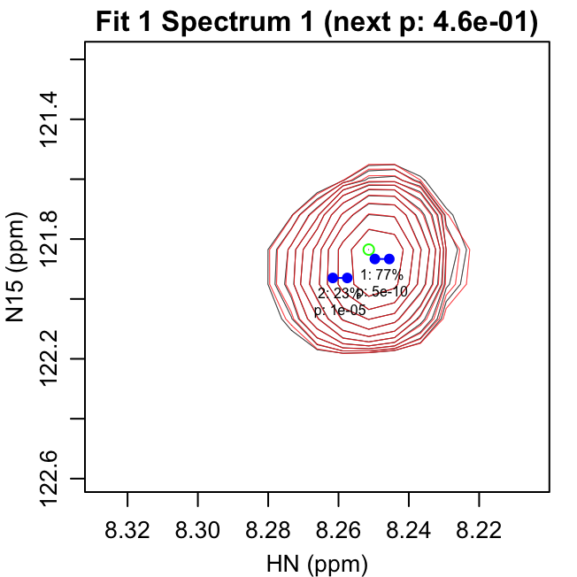

FitNMR enables fully automated peak fitting of 2D NMR spectra. This document shows how the 2D fitting can be done with very little manual code entry using three convenience scripts, fit_peaks_2d.R, refit_peaks_2d.R, and assign_peaks_2d.R, that are included with FitNMR. For a description of how a similar workflow can be accomplished using R code and more details about algorithms, see the “Automated 2D Peak Fitting Code” document. The directory containing the three demo scripts that will be used here can be found by running the following from within R:
system.file("demo", package="fitnmr")For each spectrum first use NMRPipe to produce an *.ft2 file. The data must only be apodized with the SP function using an exponent of 1 or 2. In addition, use the EXT function to extract the smallest region that contains all the relevant peaks to be fit. Eliminating noise and other extraneous peaks speeds up the processing and simplifies the output.
Fitting Initial Set of Peaks
The fit_peaks_2d.R script handles the initial fitting of peaks. You would typically use this script to find an initial set of peaks on the highest signal-to-noise spectrum in your dataset. The script can be customized by creating a copy then editing the parameters listed at the top prior to running it in R.
In a typical workflow, you would create a directory to perform the initial fitting in, then copy the reference spectrum into that directory. That spectrum must have .ft2 as the extension, otherwise the script won’t be able to find it. Ordinarily you would do this manually, but here we will do so in code. The following creates a fit directory and copies the first T1 spectrum into it.
dir.create("fit", showWarnings=FALSE)
file.copy(file.path(t1_dir, t1_ft2_filenames[1]), "fit")Next we need to make a copy of the fit_peaks_2d.R script, which may be easiest to do from within R. (Note: if you want to copy the script into the current working directory, change "fit" to "." in the line below.)
file.copy(system.file("demo", "fit_peaks_2d.R", package="fitnmr"), "fit")You can then customize any of the options at the top of fit_peaks_2d:
# Fitting Parameters:
# peak height must be at least this times the noise level for a new fitting iteration
noise_cutoff <- 15
# F-test p-value must be less than this value to accept the addition of a new peak
f_alpha <- 0.001
# maximum number of peak fitting iterations to run
iter_max <- 100
# data +/- these ppm values will be used for fitting (1H and X nuclei, respectively)
omega0_plus <- c(0.075, 0.75)
# starting R2 value for the fits
r2_start <- 5
# R2 values are constrained to be between these two numbers
r2_bounds <- c(0.5, 20)
# starting doublet scalar coupling (1H and X nuclei, respectively), NA for singlet
sc_start <- c(6, NA)
# scalar coupling values are constrained to be between these two numbers
sc_bounds <- c(2, 12)
# Plotting Parameters:
# lowest contour in fit_spectra.pdf will be this number times the noise level
plot_noise_cutoff <- 4
# scaling factor for fit_spectra.pdf labels
cex <- 0.6In this case, we will use the script unmodified. The fit_peaks_2d.R script must be run from within the fit directory, which is done below. (Note: usually you should have already set the working directory to be fit and thus omit the setwd() calls below.)
setwd("fit")
source("fit_peaks_2d.R")
#> Fit iteration 1:
#> 0 -> 6 fit parameters: F = 333.8 (p = 4.56642e-10)
#> 6 -> 9 fit parameters: F = 64.6 (p = 1.11899e-05)
#> 9 -> 12 fit parameters: F = 1.2 (p = 0.464419)
#> Terminating search because F-test p-value < 0.001
#> Fit iteration 2:
#> 0 -> 6 fit parameters: F = 734.0 (p = 1.87653e-15)
#> 6 -> 9 fit parameters: F = 14.7 (p = 0.000581712)
#> 9 -> 12 fit parameters: F = 0.1 (p = 0.976358)
#> Terminating search because F-test p-value < 0.001
#> Fit iteration 3:
#> 0 -> 6 fit parameters: F = 27.7 (p = 7.52698e-13)
#> 6 -> 9 fit parameters: F = 226.0 (p = 2.5923e-27)
#> 9 -> 12 fit parameters: F = 13.3 (p = 1.34241e-05)
#> 12 -> 15 fit parameters: F = 68.7 (p = 1.46797e-13)
#> 15 -> 18 fit parameters: F = 7.0 (p = 0.00144316)
#> Terminating search because F-test p-value < 0.001
#> Fit iteration 4:
#> 0 -> 6 fit parameters: F = 2022.7 (p = 1.60653e-20)
#> 6 -> 9 fit parameters: F = 14.0 (p = 0.000228688)
#> Terminating search because fit produced zero volume
#> Fit iteration 5:
#> 0 -> 6 fit parameters: F = 107.8 (p = 9.74212e-11)
#> 6 -> 9 fit parameters: F = 260.6 (p = 2.04021e-13)
#> 9 -> 12 fit parameters: F = 11.0 (p = 0.00161564)
#> Terminating search because F-test p-value < 0.001
#> Fit iteration 6:
#> 0 -> 6 fit parameters: F = 1219.7 (p = 6.27674e-21)
#> 6 -> 9 fit parameters: F = 174.9 (p = 1.74543e-15)
#> 9 -> 12 fit parameters: F = 42.3 (p = 8.00775e-09)
#> 12 -> 15 fit parameters: F = 11.8 (p = 0.000186865)
#> 15 -> 18 fit parameters: F = 1.6 (p = 0.223018)
#> Terminating search because F-test p-value < 0.001
#> Fit iteration 7:
#> 0 -> 6 fit parameters: F = 232.0 (p = 1.0692e-22)
#> 6 -> 9 fit parameters: F = 15.9 (p = 1.99824e-06)
#> 9 -> 12 fit parameters: F = 54.3 (p = 1.15821e-11)
#> Terminating search because fit produced zero volume
#> Fit iteration 8:
#> 0 -> 6 fit parameters: F = 330.9 (p = 1.75035e-07)
#> 6 -> 9 fit parameters: F = 1.8 (p = 0.274918)
#> Terminating search because F-test p-value < 0.001
setwd("..")Output Files
Four output files are created by fit_peaks_2d.R:
noise_histograms.pdffit_iterations.pdffit_spectra.pdffit_volume.csv
noise_histograms.pdf gives a histogram of the intensity values for each of the input spectra. The standard deviation of a Gaussian fit to that histogram is used to determine the noise level.

fit_iterations.pdf shows each iteration of the fitting, with the data shown in black and the fit contours shown in red. Negative contours are shown with lighter colors. The starting peak position is indicated with a green circle. It is the highest intensity in the spectrum after previous fits have been subtracted. The blue points show the positions of the peaks in the modeled doublet.
The first line of text under each peak gives the peak number and fraction of the total volume in that iteration. The second line gives the F-test p-value for that peak. The title text in parentheses gives the reason the next peak was rejected: either the p-value for the peak was greater than f_alpha or the peak had 0 volume.
All peaks in a given iteration are fit with the same peak shape parameters, including the peak position (omega0) and doublet scalar coupling (sc). Those peaks are all assigned to the same fitting group (fit) and continue to share the same peak shape parameters in subsequent fit optimizations. This parameter sharing can be important for peaks that are highly overlapped both for accuracy and stability of the fitting algorithm. If desired, you can manually modify the peak grouping in the peak list comma separated value (CSV) file to change which peaks share parameters.
The first four pages of what would be in fit_iterations.pdf are shown here:

fit_spectra.pdf gives the fit spectra. The doublet peak positions are shown with semi-transparent blue dots that are scaled such that the area is proportional to the peak volume. The first line of text under each peak gives the peak number and the fit group number separated by a colon. The second line gives the F-test p-value for that peak. By default, the lowest contour of this spectrum is set to four times the noise level, but that can be changed using the plot_noise_cutoff script parameter. Furthermore, the size of the labels can be controlled using the cex (i.e. character expansion) script parameter.
fit_volume.csv contains all the identified peaks, the fitting group for each peak (which in this case is the iteration it was found in), the peak position/shape parameters, and a column for the volume found in each spectrum.
| peak | fit | f_pvalue | omega0_ppm_1 | omega0_ppm_2 | sc_hz_1 | r2_hz_1 | r2_hz_2 | 1.ft2 |
|---|---|---|---|---|---|---|---|---|
| 1 | 1 | 4.57e-10 | 8.2476 | 121.87 | 3.2806 | 2.9072 | 2.33450 | 824420657 |
| 2 | 1 | 1.12e-05 | 8.2596 | 121.93 | 3.2806 | 2.9072 | 2.33450 | 240560662 |
| 3 | 2 | 1.88e-15 | 8.5400 | 119.76 | 2.0000 | 4.7886 | 2.09965 | 1020008726 |
| 4 | 2 | 5.82e-04 | 8.5202 | 119.73 | 2.0000 | 4.7886 | 2.09965 | 89977216 |
| 5 | 3 | 7.53e-13 | 8.6125 | 123.36 | 7.6481 | 5.2849 | 2.18012 | 848579189 |
| 6 | 3 | 2.59e-27 | 8.5854 | 123.03 | 7.6481 | 5.2849 | 2.18012 | 607904936 |
| 7 | 3 | 1.34e-05 | 8.6449 | 123.47 | 7.6481 | 5.2849 | 2.18012 | 147984411 |
| 8 | 3 | 1.47e-13 | 8.5370 | 122.96 | 7.6481 | 5.2849 | 2.18012 | 161971930 |
| 9 | 4 | 1.61e-20 | 8.3580 | 119.89 | 10.2029 | 2.2306 | 5.03575 | 875241831 |
| 10 | 4 | 2.29e-04 | 8.3791 | 119.90 | 10.2029 | 2.2306 | 5.03575 | 62766713 |
| 11 | 5 | 9.74e-11 | 8.2506 | 119.41 | 6.3683 | 4.9091 | 1.85341 | 732475431 |
| 12 | 5 | 2.04e-13 | 8.2900 | 119.38 | 6.3683 | 4.9091 | 1.85341 | 181301641 |
| 13 | 6 | 6.28e-21 | 8.4826 | 122.50 | 9.1982 | 5.0619 | 2.03464 | 475854299 |
| 14 | 6 | 1.75e-15 | 8.4629 | 122.91 | 9.1982 | 5.0619 | 2.03464 | 28166195 |
| 15 | 6 | 8.01e-09 | 8.4768 | 123.03 | 9.1982 | 5.0619 | 2.03464 | 92626742 |
| 16 | 6 | 1.87e-04 | 8.4786 | 122.43 | 9.1982 | 5.0619 | 2.03464 | 105607485 |
| 17 | 7 | 1.07e-22 | 8.4433 | 120.73 | 7.1444 | 6.3350 | 2.97224 | 460752250 |
| 18 | 7 | 2.00e-06 | 8.4252 | 120.46 | 7.1444 | 6.3350 | 2.97224 | 97674580 |
| 19 | 7 | 1.16e-11 | 8.4663 | 120.51 | 7.1444 | 6.3350 | 2.97224 | 62014526 |
| 20 | 8 | 1.75e-07 | 8.3444 | 120.76 | 8.6176 | 1.9530 | 0.86044 | 105614247 |
Refining the Initial Fit
The initial fit is done iteratively so it is usually a good idea to refine this by editing the fitting groups, deleting extraneous peaks, and then doing a simultaneous refit of all peaks together with the refit_peaks_2d.R script. We will do this in another directory called refine, to which the first spectrum and the refit_peaks_2d.R script should be copied:
dir.create("refine", showWarnings=FALSE)
file.copy(file.path(t1_dir, t1_ft2_filenames[1]), "refine")
file.copy(system.file("demo", "refit_peaks_2d.R", package="fitnmr"), "refine", overwrite=TRUE)Any of the options at the top of refit_peaks_2d.R can then be customized:
# Fitting Parameters:
# data +/- these ppm values will be used for fitting (1H and X nuclei, respectively)
omega0_plus <- c(0.075, 0.75)
# omega0 values are constrained to be within this factor times R2 of the starting omega0
omega0_r2_factor <- 1.5
# R2 values are constrained to be between these two numbers
r2_bounds <- c(0.5, 20)
# scalar coupling values are constrained to be between these two numbers
sc_bounds <- c(2, 12)
# enable refitting of omega0
fit_omega0 <- TRUE
# enable refitting of R2
fit_r2 <- TRUE
# enable refitting of scalar couplings
fit_sc <- TRUE
# Plotting Parameters:
# lowest contour in *_fit.pdf will be this number times the noise level
plot_noise_cutoff <- 4
# scaling factor for *_fit.pdf labels
cex <- 0.6
# show omega0 constraints imposed by omega0_r2_factor
plot_omega0_bounds <- TRUE
# Computing Parameters:
# number of cores to use for refitting
mc_cores <- parallel::detectCores()However, in this case the script will be used unmodified. The next step is to copy the peak list from the fit directory to a file called start_volume.csv in the new directory:
file.copy(file.path("fit", "fit_volume.csv"), file.path("refine", "start_volume.csv"), overwrite=TRUE)Once that file has been copied, you can then manually change the peak groups and delete rows for any peaks you want to discard. In this case, that will be done with the following R code, which puts peaks 5 and 7 into a new fitting group, and removes peaks 4, 14, and 16:
input_table <- read.csv(file.path("refine", "start_volume.csv"), check.names=FALSE)
input_table[c(5,7),"fit"] <- max(input_table[,"fit"])+1
input_table <- input_table[-c(4,14,16),]
write.csv(input_table, file.path("refine", "start_volume.csv"), row.names=FALSE)The final step is to call the refit_peaks_2d.R from within the refine directory:
setwd("refine")
source("refit_peaks_2d.R")
#> Fitting m0 for spectrum 1.ft2...
#> Fitting omega0,sc,r2,m0 for spectrum 1.ft2...
setwd("..")The refit_peaks_2d.R script first optimizes the volumes, keeping all other parameters fixed, then optimizes the volumes along with whatever other variables the user specifies in the script. Also, unlike the refinement done in “Automated 2D Peak Fitting Code”, refit_peaks_2d.R only fits a single spectrum at a time. This avoids two problems:
- For many experiments in which a series of spectra are acquired, different amounts of applied power can result in subtle shifts of the temperature/peak positions. Especially for overlappling peaks, this can cause systematic variations in the volumes. Allowing each spectrum to have slightly different peak positions within a small region around the starting values helps avoid this problem.
- When many spectra are fit simultaneously, the memory usage for FitNMR can grow very large. This will hopefully be fixed in a future update.
Output Files
The refit_peaks_2d.R script creates two files for each spectrum, whose names are derived from the spectrum filenames:
*_fit.pdf*_volume.csv
*_fit.pdf shows the overall spectrum as described above. In addition, it also shows the constraints on the omega0 parameters using gray rectangles, the size of which is determined by the omega0_r2_factor parameter. The central peak position, shown as a small blue dot, is constrained to be within that gray rectangle.
*_volume.csv contains all the identified peaks, along with a column for the volume found in that spectrum.
| peak | fit | omega0_ppm_1 | omega0_ppm_2 | sc_hz_1 | r2_hz_1 | r2_hz_2 | 1.ft2 |
|---|---|---|---|---|---|---|---|
| 1 | 1 | 8.2476 | 121.87 | 3.3463 | 2.8966 | 2.31700 | 823653059 |
| 2 | 1 | 8.2596 | 121.93 | 3.3463 | 2.8966 | 2.31700 | 239523996 |
| 3 | 2 | 8.5395 | 119.76 | 2.0000 | 5.6996 | 2.07427 | 1120612478 |
| 4 | 3 | 8.6123 | 123.37 | 9.4647 | 3.2950 | 2.36758 | 777523259 |
| 5 | 4 | 8.5853 | 123.04 | 6.0587 | 6.5823 | 1.79531 | 632568162 |
| 6 | 3 | 8.6439 | 123.45 | 9.4647 | 3.2950 | 2.36758 | 163968345 |
| 7 | 4 | 8.5370 | 122.96 | 6.0587 | 6.5823 | 1.79531 | 151176240 |
| 8 | 5 | 8.3575 | 119.89 | 10.1581 | 1.7366 | 4.73950 | 803422420 |
| 9 | 5 | 8.3749 | 119.90 | 10.1581 | 1.7366 | 4.73950 | 96583110 |
| 10 | 6 | 8.2506 | 119.41 | 6.0938 | 5.0267 | 1.77685 | 731301051 |
| 11 | 6 | 8.2901 | 119.38 | 6.0938 | 5.0267 | 1.77685 | 180469307 |
| 12 | 7 | 8.4819 | 122.49 | 9.4013 | 5.0804 | 2.41291 | 587357774 |
| 13 | 7 | 8.4745 | 123.01 | 9.4013 | 5.0804 | 2.41291 | 108283128 |
| 14 | 8 | 8.4433 | 120.73 | 9.1220 | 4.8623 | 3.19661 | 436467804 |
| 15 | 8 | 8.4244 | 120.47 | 9.1220 | 4.8623 | 3.19661 | 95394070 |
| 16 | 8 | 8.4672 | 120.52 | 9.1220 | 4.8623 | 3.19661 | 64410529 |
| 17 | 9 | 8.3442 | 120.76 | 8.3984 | 1.5894 | 0.91155 | 97879390 |
Extending the Fit to Other Spectra
To extend the refined fit to a series of other spectra, we will create another directory called extend. To this directory both T1 spectra will be copied. In addition, the fit parameter CSV file output by the refinement step will be copied to the file start_volume.csv for use as input.
dir.create("extend", FALSE)
file.copy(file.path(t1_dir, t1_ft2_filenames), "extend")
file.copy(file.path("refine", "1_volume.csv"), file.path("extend", "start_volume.csv"), overwrite=TRUE)A copy of the refit_peaks_2d.R script will be used again:
file.copy(system.file("demo", "refit_peaks_2d.R", package="fitnmr"), "extend", overwrite=TRUE)However, when extending the fit to other spectra, the parameters determining the peak shape (sc and r2) will be fixed, allowing only the volume and peak position to vary. This is done by changing fit_sc and fit_r2 to FALSE at the top of the script, which can be done using a text editor. For the purposes of this demonstration, the two parameters are changed with the following code:
script_lines <- readLines(file.path("extend", "refit_peaks_2d.R"))
script_lines <- sub("fit_sc <- TRUE", "fit_sc <- FALSE", script_lines)
script_lines <- sub("fit_r2 <- TRUE", "fit_r2 <- FALSE", script_lines)
writeLines(script_lines, file.path("extend", "refit_peaks_2d.R"))The part of the script controlling the parameters to be fit now reads:
# enable refitting of omega0
fit_omega0 <- TRUE
# enable refitting of R2
fit_r2 <- FALSE
# enable refitting of scalar couplings
fit_sc <- FALSENext, run refit_peaks_2d.R from within the the extend directory. It will do the refitting for each spectrum on a different CPU core, reducing the total time taken to fit a large number of spectra.
setwd("extend")
source("refit_peaks_2d.R")
#> Fitting m0 for spectrum 1.ft2...
#> Fitting omega0,m0 for spectrum 1.ft2...
#> Fitting m0 for spectrum 2.ft2...
#> Fitting omega0,m0 for spectrum 2.ft2...
setwd("..")Output Files
As above, the script creates two files for each spectrum, whose names are derived from the spectrum filenames. Here the output associated with 2.ft2 is shown, as the output for 1.ft2 is very similar to the previous section.
*_fit.pdf shows the overall spectrum. Pay particular attention to where the small blue circle is located in the gray rectangle. You may want to adjust omega0_r2_factor to increase or decrease the stringency of the omega0 constraint, or possibly choose a different spectrum to use for start_volume.csv.
*_volume.csv contains all the identified peaks, along with a column for the volume found in that spectrum.
| peak | fit | omega0_ppm_1 | omega0_ppm_2 | sc_hz_1 | r2_hz_1 | r2_hz_2 | 2.ft2 |
|---|---|---|---|---|---|---|---|
| 1 | 1 | 8.2491 | 121.87 | 3.3463 | 2.8966 | 2.31700 | 231872819 |
| 2 | 1 | 8.2612 | 121.93 | 3.3463 | 2.8966 | 2.31700 | 67997595 |
| 3 | 2 | 8.5409 | 119.76 | 2.0000 | 5.6996 | 2.07427 | 321746353 |
| 4 | 3 | 8.6139 | 123.37 | 9.4647 | 3.2950 | 2.36758 | 220800433 |
| 5 | 4 | 8.5869 | 123.04 | 6.0587 | 6.5823 | 1.79531 | 176274429 |
| 6 | 3 | 8.6458 | 123.45 | 9.4647 | 3.2950 | 2.36758 | 44076003 |
| 7 | 4 | 8.5377 | 122.97 | 6.0587 | 6.5823 | 1.79531 | 43199279 |
| 8 | 5 | 8.3584 | 119.89 | 10.1581 | 1.7366 | 4.73950 | 238007135 |
| 9 | 5 | 8.3748 | 119.88 | 10.1581 | 1.7366 | 4.73950 | 36138286 |
| 10 | 6 | 8.2520 | 119.41 | 6.0938 | 5.0267 | 1.77685 | 211286779 |
| 11 | 6 | 8.2913 | 119.39 | 6.0938 | 5.0267 | 1.77685 | 49843412 |
| 12 | 7 | 8.4830 | 122.49 | 9.4013 | 5.0804 | 2.41291 | 171865386 |
| 13 | 7 | 8.4754 | 123.00 | 9.4013 | 5.0804 | 2.41291 | 36056767 |
| 14 | 8 | 8.4448 | 120.73 | 9.1220 | 4.8623 | 3.19661 | 122206500 |
| 15 | 8 | 8.4259 | 120.48 | 9.1220 | 4.8623 | 3.19661 | 28602978 |
| 16 | 8 | 8.4677 | 120.51 | 9.1220 | 4.8623 | 3.19661 | 19245838 |
| 17 | 9 | 8.3460 | 120.77 | 8.3984 | 1.5894 | 0.91155 | 35368718 |
Transferring Assignments
FitNMR can also transfer previously determined peak assignments onto the peak lists. Unlike the previous section, this will be done in the same extend directory used above. For this tutorial, assignments for the subregion of the spectrum are also provided, which should be copied into that directory and given the name assignments.csv.
file.copy("~/Documents/Wesleyan/R/fitnmr/inst/extdata/t1/assignments.csv", "extend", overwrite=TRUE)The assignments.csv file should contain a header and three columns. The text in the header is ignored, but the order of the columns must be:
- Peak identifier
- PPM in dimension 1
- PPM in dimension 2
The assignments.csv file used here contains eight peaks:
| res | hn_ppm | n_ppm |
|---|---|---|
| 2 | 8.517 | 120.56 |
| 5 | 8.565 | 122.23 |
| 16 | 8.573 | 119.43 |
| 19 | 8.323 | 119.23 |
| 20 | 8.646 | 122.87 |
| 21 | 8.288 | 121.61 |
| 26 | 8.431 | 119.73 |
| 27 | 8.679 | 122.89 |
The script that transfers assignments is called assign_peaks_2d.R and should also be copied into the extend directory:
file.copy("~/Documents/Wesleyan/R/fitnmr/demo/assign_peaks_2d.R", "extend", overwrite=TRUE)There are a number of parameters at the top of that script that can be customized:
# Assignment Parameters:
# peak assignment stage 1 adjustment (for first and second dimensions, respectively)
cs_adj_1 <- c(0, 0)
# peak assignment stage 1 distance threshold (fraction of chemical shift range)
thresh_1 <- 0.1
# peak assignment stage 1 adjustment (for first and second dimensions, respectively)
cs_adj_2 <- c(0, 0)
# peak assignment stage 2 distance threshold (fraction of chemical shift range)
thresh_2 <- 0.025
# Plotting Parameters:
# lowest contour in *_fit.pdf will be this number times the noise level
plot_noise_cutoff <- 4
# scaling factor for fit_spectra.pdf labels
cex <- 0.2
# plot ovals showing the thresholds for peak assignment transfer
plot_thresh <- TRUE
# color for unmatched peaks/assignments
unmatched_col <- "purple"The assignment transfer uses a FitNMR function called height_assign() that goes through each peak the spectrum in order of decreasing height/volume, and assigns it to the closest position in the assignment list that is within some threshold distance. Internally, the chemical shifts in each dimension are normalized by the range of values in that dimension. The threshold is given in those normalized units, such that a value of 0.1 would allow a difference of no more than 10% of the spectral width in each dimension, or less for diagonally adjacent peaks. The algorithm does not assign multiple peaks to the same identifier.
To help automatically handle differences in referencing between the spectra and input assignments, the algorithm uses height_assign() in two different stages. The first stage uses a larger threshold to handle cases where the referencing is quite different. After that initial assignment, the median offsets between the spectra and input assignments (in each dimension) are used to shift the input assignments. As long as there are enough isolated peaks that can be correctly assigned in the first stage, this is often sufficient to automatically correct the referencing for a more stringent second stage. The thresholds for both stages (thresh_1 and thresh_2) can be tailored individually. In addition, the assigned chemical shifts can be manually adjusted for each stage (using cs_adj_2 and cs_adj_2) to help in cases where the referencing cannot be automatically corrected.
Because this is a subspectrum, the default values for the thresholds do not work as well. Furthermore, while the whole spectrum has enough peaks to automatically determine the correct offset after stage 1, the subspectrum does not, so the proton assignments are manually shifted 0.02 ppm to the left to compensate. For this tutorial, that is done with the following code:
script_lines <- readLines(file.path("extend", "assign_peaks_2d.R"))
script_lines <- sub("thresh_1 <- 0.1", "thresh_1 <- 0.2", script_lines)
script_lines <- sub("cs_adj_2 <- c\\(0, 0\\)", "cs_adj_2 <- c(-0.02, 0)", script_lines)
script_lines <- sub("thresh_2 <- 0.025", "thresh_2 <- 0.075", script_lines)
writeLines(script_lines, file.path("extend", "assign_peaks_2d.R"))After modification, the modified part of the script now reads:
# peak assignment stage 1 distance threshold (fraction of chemical shift range)
thresh_1 <- 0.2
# peak assignment stage 1 adjustment (for first and second dimensions, respectively)
cs_adj_2 <- c(-0.02, 0)
# peak assignment stage 2 distance threshold (fraction of chemical shift range)
thresh_2 <- 0.075The assign_peaks_2d.R script should then be run from within the extend directory:
Output Files
Three output files are generated by the script:
assign_stages.pdfassign_omegas.pdfassign_volume.csv
assign_stages.pdf shows two stages used for assignment transfer. The gray points show the chemical shifts of the input assignments after cs_adj_1 has been applied. The peaks matched to those assignments in stage 1 are connected by gray lines. A larger gray oval around each input assignment shows the size of thresh_1. The adjusted input assignment chemical shifts used for stage 2 are shown in green, with smaller ovals indicating a more stringent thresh_2. Any input assignment not matched to a peak has its label drawn in purple. Likewise, any peak not matched to an input assignment is labeled in purple.
assign_omegas.pdf shows the final results of the assignment transfer, with the identifier of an assigned peak shown above the peak, and unassigned peaks labeled in purple. In addition, the peak positions from all of the fit spectra are shown as very small points, which are difficult to see here and are best viewed zoomed in to the PDF. An attempt is made to color each peak in a given group differently.
assign_volume.csv contains all the peaks, with the assigned identifier in the first column. The peak positions, scalar couplings, and relaxation rates in this table give the median values from all the individual fits. There is also a column for the volume found in each spectrum.
| assignment | peak | fit | omega0_ppm_1 | omega0_ppm_2 | sc_hz_1 | r2_hz_1 | r2_hz_2 | 1.ft2 | 2.ft2 |
|---|---|---|---|---|---|---|---|---|---|
| 21 | 1 | 1 | 8.2484 | 121.87 | 3.3463 | 2.8966 | 2.31700 | 823654203 | 231872819 |
| 2 | 1 | 8.2604 | 121.93 | 3.3463 | 2.8966 | 2.31700 | 239522805 | 67997595 | |
| 16 | 3 | 2 | 8.5402 | 119.76 | 2.0000 | 5.6996 | 2.07427 | 1120538907 | 321746353 |
| 27 | 4 | 3 | 8.6131 | 123.37 | 9.4647 | 3.2950 | 2.36758 | 777522598 | 220800433 |
| 20 | 5 | 4 | 8.5861 | 123.04 | 6.0587 | 6.5823 | 1.79531 | 632568971 | 176274429 |
| 6 | 3 | 8.6449 | 123.45 | 9.4647 | 3.2950 | 2.36758 | 163968675 | 44076003 | |
| 7 | 4 | 8.5373 | 122.96 | 6.0587 | 6.5823 | 1.79531 | 151175459 | 43199279 | |
| 26 | 8 | 5 | 8.3579 | 119.89 | 10.1581 | 1.7366 | 4.73950 | 802920758 | 238007135 |
| 9 | 5 | 8.3748 | 119.89 | 10.1581 | 1.7366 | 4.73950 | 97111602 | 36138286 | |
| 19 | 10 | 6 | 8.2513 | 119.41 | 6.0938 | 5.0267 | 1.77685 | 731306564 | 211286779 |
| 11 | 6 | 8.2907 | 119.38 | 6.0938 | 5.0267 | 1.77685 | 180469286 | 49843412 | |
| 5 | 12 | 7 | 8.4825 | 122.49 | 9.4013 | 5.0804 | 2.41291 | 587358952 | 171865386 |
| 13 | 7 | 8.4750 | 123.01 | 9.4013 | 5.0804 | 2.41291 | 108283049 | 36056767 | |
| 2 | 14 | 8 | 8.4441 | 120.73 | 9.1220 | 4.8623 | 3.19661 | 436473368 | 122206500 |
| 15 | 8 | 8.4252 | 120.47 | 9.1220 | 4.8623 | 3.19661 | 95383740 | 28602978 | |
| 16 | 8 | 8.4674 | 120.52 | 9.1220 | 4.8623 | 3.19661 | 64431478 | 19245838 | |
| 17 | 9 | 8.3451 | 120.76 | 8.3984 | 1.5894 | 0.91155 | 97878091 | 35368718 |